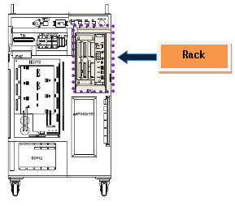

1.1.19.1. Outline
The main board’s command code received by the Servo board does not meet the mutual regulation of the main board and the Servo board. This error may occur due to communication error or version differences between the main board and the Servo board.
1.1.19.2. Causes and checking methods
1. Examine if the main board and the Servo board are installed properly.
This error may be caused by a communication problem if the main board and the Servo board is not installed properly on a rack or the board has an error.
1) Examine if the board is installed properly.
Please remove the main board and the Servo board from the rack, and re-install them again.

Figure 5.61 Location of the rack inside the controller
2) Examine if the board is faulty.
To examine if the board is faulty, please replace it with a new one.
2. Examine if the versions of the main board and the Servo board match.
When the controller turns on, it will check the versions of the main board and the Servo board.
If the versions do not match, an error “E0178–E181 DSP version mismatch” will be displayed.
Please contact our A/S department to update the system with a proper version.
The versions of the main board and the Servo board can be checked from the menu below.
(1) Service
(2) 7. System diagnosis
(3) 1. System version